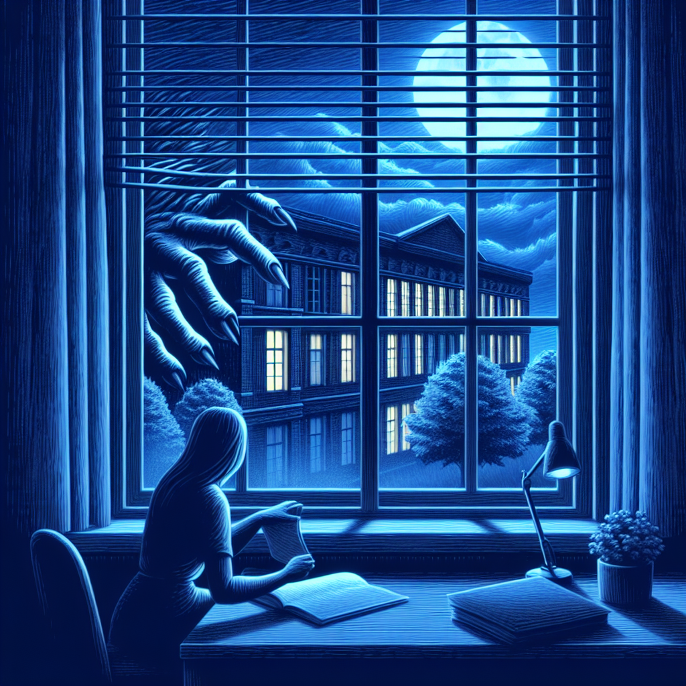

# Understanding Rules-based Ghost Stories“Rules-based Ghost Stories” belong to a special style of genre-bending mystery novels, using many bizarre rules to guide readers in deducing the true nature of events.
Essentially, Rules-based Ghost Stories are a type of horror where the presentation primarily involves rules and regulations, ordinances, or little notes. This type of rule starts off normal but becomes increasingly abnormal as the story progresses. The reader’s task is to reason through these abnormal conditions to piece together the events and uncover the truth.
Rules-based Ghost Stories can be considered a new type of ghost story novel, characterized by a scientific and rational approach to describing various strange phenomena. This method of expression not only adds a wonderful sense of suspense but also conveys a mysterious sense of horror.
Characteristics of Rules-based Ghost Stories:
- They are expressed in a way that adheres to rules or codes, preferably without incorporating emotions.
- Each rule includes something that does not make logical sense, but the explanation stops just as it piques interest.
- Some rules only state the outcomes, such as “no entry” rules.
- By layering each rule upon the last, a gradual intensification of the reader’s fear of the rules is achieved.

Rules-based Ghost Stories emerged and gained popularity among many online ghost story creation trends. The specific origins and the first work are difficult to trace.
On the Chinese internet, it is common for people to transfer ghost story creations from foreign communities like Reddit, which include some rules-based ghost stories; there are also original works created.
The explosion of popularity for rules-based ghost stories on the Chinese internet originated from a post on the anonymous section of A Island in 2021 titled “Zoo Rules Ghost Story,” sparking a trend of analysis, reinterpretation, secondary creation, and playful deconstruction. Following this, many rules-based ghost stories were created.
Can LLMs do a good job as a media-based and somehow logically complicated literature? I will try to prompt a good Analog Horror script with relevant AI-generated pictures.
I give the translation of the story “Zoo Rules Ghost Story” to GPT-4.0 and ask it to analyze why this is terrifying.
City of Zoo: Visitor Guidelines
- : Dear visitor, welcome to the largest zoo in our city. This zoo is home to most kinds of animals in the world, and we guarantee that each type of animal is provided with an environment suitable to them. We wish you and your children a pleasant time at the zoo. During your visit, please adhere to the following rules in order to ensure your safety. Deviate at your own risk.
-
Our zoo’s safety is absolutely top-notch, and there is no chance at all for animals to escape. In particular, small herbivores are mostly kept in closed areas you cannot touch. Therefore, if you see rabbits on the run on the road, please move away from it immediately with your children, and report to a zoo worker. Do not attempt to walk towards the rabbit, and do not touch it, especially when the rabbit has discovered you and is approaching at high speed.
- There is only one passageway through the Monkeys Area, and only monkeys are on display. If you see two passageways, and displayed animals include rabbits, please take the path on the left, and finish your travel through the area as soon as possible. Elephants are a type of enormous animal with fan-like ears, long noses, and column-like legs, and they are not white. Make sure you see and only see elephants in the Elephants Area. The drink stalls in the zoo do not provide “Rabbit Blood”. If you see some on the shelf, do not purchase.
- Do not loiter alone under the trees’ shadows in the Rabbits Area. This zoo does not have an Aquarium. If a zoo employee attempts to sell you a ticket to the aquarium, refuse.
- If you already see the Aquarium, leave immediately, and dial the number on your map to notify us.
- Do not feed the rabbits. Any other animal would be fine to feed.
- Rabbits don’t laugh. If you hear laughter emanating from a direction where there are no persons when visiting the Rabbits Area, tear the corner of your visitor’s map marked with a dashed line, and hold the torn bit in your hand until you leave the zoo.
- If you disobey any of the above and find yourself lost, or separated from people in your party, please make your way to a drink stall within 15 minutes, and inform an employee in blue uniform (Note, if you see a zoo employee in black, pretend not to hear whatever they may say to you). The employee will immediately send you to the employee’s passageway in the Lions Area. Do not be afraid, the lions here will not attack you. Hide behind the scenery mountain. After all white lions start roaring, an employee will guide you away (please make sure this employee is in blue uniform). At this point, your family and friends will be waiting for you at the gate of the Lions Area. After this, depart the zoo immediately.
- Our zoo only has four white lions. If during the situation described by point (10.) you see more than four white lions roaring, do not leave the zoo, and inform an employee. Leave after the number of white lions returns to four.
- You can purchase any animal merchandise for children aged under 12, including toy rabbits; children aged 13 - 17 have to dispose of toy rabbits within one month of purchase; people aged 18 and above cannot purchase the toy rabbits.
- If you see somebody wearing rabbit ears mixed in the crowd into the Elephants Area, you must abort visiting that area. If you disobey this rule, the zoo cannot guarantee your safety, and cannot provide any solutions.
- The Lions Area is safe. If you encounter any situation you cannot resolve, and find yourself without help, please immediately, at all costs, and by all means, make your way to the Lions Area.
- Be alert of anyone in your party you’ve lost once or above, especially when they repeatedly suggest visiting the aquarium or the Elephants Area.
- As long as you obey the rules above, you will have a pleasant time at the zoo, and you and your children will leave with immense joy and knowledge. Obey the rules, and be safe, we wish you a happy visit!
- ## Zoo Employee Regulations
-
Our zoo has very high employee benefits, 10x after-hours pay, and a generous annual leave allowance. All employees are insured. Remembering and observing the rules, we hope you work hard and diligently and ensure your own safety. Life is precious, and you only live once. For your family, please protect yourself, and obey the following rules.
-
If you see rabbits on the loose, do not engage in direct capture, and do not approach. Attract them to the Lions Area, and hand off the rest to the white lions. The Monkeys Area has only one path through. If a visitor reports to you there are two, and rabbits are spotted, please guide everyone already entered to the left passageway, and close the entrance gate. After all visitors have left, put the Monkeys Area under lockdown for at least ten minutes.
- When inspecting the elephants, if you feel the elephants you observe deviate significantly in appearance from the elephants depicted on zoo signage, stop looking, and reaffirm to yourself that the real elephant is the animal depicted on signs, and not what you see.
- If you work at a drinks stall, check the shelves once every hour. If “Rabbit Blood” suddenly appears out of nowhere, collect them and dispose of them properly.
- Trim the bushes in the Rabbits Area once every month, and try your best to eliminate shaded areas in this zone.
- The zoo does not have an aquarium. If your colleague mentions it and confirms it exists, stop your conversation immediately, and he or she is no longer someone you know. If you see the aquarium, do not enter, and tell yourself it does not exist. Depart with haste. The rabbits are fed once every seven days, and only the prescribed food items may be used.
- If you hear laughter emanating from a direction where there are no visitors in the Rabbits Area, tear off the last page of your employee handbook following the dashed line. Hold the torn bit in your hand, and proceed to the Elephants Area. Throw this piece of paper onto the grass there. Other employees will know what has happened; they will not accuse you of littering.
- If a visitor asks you for help and claims to have separated from their friends or family after disobeying the Visitor Guidelines, immediately take the visitor to the Lions Area, and hand them off to the Lions Area staff. They will know what to do. During this process, you may notice colleagues in black uniforms trying to assist your work. Refuse and ignore them. They are not your colleagues.
- There are only four white lions in the Lions Area. If the number suddenly changed above four, show them Rabbit Blood, and splash it onto the first white lion that approaches. Depart immediately after doing so. Do not watch the extra white lions during this time.
- Do not steal, organize, or replenish the stock of rabbit merchandise. Where possible, avoid touching all rabbit merchandise all over the zoo. If a visitor mentions purchasing a rabbit merchandise item, make sure its future owner is under 18 years of age, otherwise do not sell.
- If you see somebody wearing rabbit ears entering the Elephants Area, disperse all visitors around, and stand guard at the gate of the area until you hear the screaming of a child.
- It is normal to have episodes where you feel ringing ears/shortness of breath/migraine/red eyes. They should last under five minutes. If these symptoms last longer than five minutes, stop working and make your way immediately to the Lions Area.
- Friendly treat the white lions. You do not need to take any precautions when there are only four. They are trained to be nice to humans from a young age. [Scratched Out] If you, unfortunately, are attacked by normal white lions but did not immediately die, rules 6 and 7 no longer apply. Do not go to a hospital, you will not die. Upon leaving the lions area, go to the aquarium. You will soon see it. You will be wearing a black uniform. [End Scratched Out]
Note
Analyze these rules, why are they terrifying?
::: > The “City of Zoo: Visitor Guidelines” is a captivating example of analog horror, leveraging the format of mundane zoo rules to instill a deep sense of dread and unease. Here’s an analysis of why these rules are terrifying:
- Incongruity and Normalcy Disruption: The rules start off as typical safety guidelines but quickly introduce elements that are starkly incongruent with normal expectations. Mention of “rabbits on the run” or having to choose specific paths due to abnormal occurrences disrupts the expected normalcy of a zoo visit, suggesting hidden dangers or anomalies.
- Specificity of Instructions: The detailed and oddly specific instructions, such as not touching rabbits that approach at high speed or the precise actions to take when encountering the aquarium that supposedly does not exist, create an unsettling feeling. This specificity implies that these bizarre situations have happened before and are serious threats.
- Ambiguity and Mystery: Many of the rules hint at underlying stories or threats without fully explaining them, such as why you should never purchase “Rabbit Blood” or what happens if you encounter more than four white lions. This ambiguity leaves much to the imagination, often leading the mind to conjure up far worse scenarios than any explicit description could.
- Paranormal or Surreal Elements: The inclusion of elements that defy logical explanation, such as rabbits that laugh or an aquarium that both does not and does exist, introduces a paranormal or surreal quality to the rules, heightening the horror aspect.
- Isolation and Danger: Instructions often isolate the visitor or employee during incidents, such as directing lost visitors to a specific area where normal help protocols are subverted (e.g., being taken to the Lions Area rather than exiting the zoo). The implication that you might be on your own against unseen threats adds a profound level of terror.
- Consequences of Non-compliance: The severe consequences outlined for not following the rules, such as potentially encountering dangerous situations with no guaranteed help from the zoo, play on basic human fears of abandonment and helplessness.
- Manipulation of Trust: The rules frequently instruct to distrust certain employees or ignore others, manipulating normal trust dynamics and creating an atmosphere where paranoia is rational and every decision could be critical.
These elements combined create a narrative that something deeply wrong and inexplicable lurks beneath the surface of what should be a safe and enjoyable environment, transforming ordinary zoo guidelines into a chilling set of rules that promise a dangerous, mysterious, and possibly supernatural experience. This is a brilliant use of analog horror to unsettle and engage the reader, leaving them anxious about what lies in wait, adhering to every rule for fear of the unknown consequences.
The second step is to generate our own rule-based horrors.
Note
Based on this, please generate a similar set of rules for UPenn Communications Students in final exam days.
::: > Here’s a set of unsettling, analog horror-inspired rules for UPenn Communications students during their final exam days, designed to create a mysterious and eerie atmosphere:
University of Pennsylvania Department of Communications: Final Exam Protocol
Dear Students,
As you approach your final examinations, please adhere to the following guidelines to ensure not only academic success but also your personal safety and mental well-being. These protocols are derived from past experiences and are in place to protect you from common but often overlooked hazards associated with this high-stress period.
Exam Hall Silence: While silence is mandatory in all exam halls, if you hear whispered voices discussing topics not covered by your study material, do not attempt to listen. Place your hands over your ears until the voices cease. Inform your proctor silently on your way out.
Clocks: If the classroom clock begins to run backwards, or faster than normal, do not panic. Close your eyes, count to ten, and focus solely on your breathing. This will typically reset the flow of time. Continue your exam as usual but avoid looking directly at the clock again.
Technology Usage: Use of electronic devices is strictly prohibited during exams. If your phone vibrates, even if turned off, do not acknowledge it. If it persists, leave it at the designated electronic drop-off without checking the screen.
Emergency Exits: Familiarize yourself with all emergency exits. However, if you notice an additional door that wasn’t there at the beginning of the exam, do not approach or discuss its presence with other students. Focus on your exam; the door does not concern you.
Proctor Behavior: If your proctor is seen wearing a red tie or scarf, do not accept any papers or instructions directly from them. Wait until a second proctor verifies your exam materials.
Bathroom Breaks: You may leave for the bathroom no more than once during the exam. If you find the hallway deserted or see flickering lights leading to a previously unmarked restroom, turn around and return immediately. Use only the restroom you remember from the start of the semester.
Hallway Mirrors: Avoid looking into any mirrors in the hallways during exam days. If you accidentally catch your reflection, and it blinks, walk to your classroom without turning back. Mention this to no one as it may disrupt their focus.
Window Views: If the view outside the window changes to a scene not recognizable as part of the campus, or shifts to a nighttime view when it should be day, gently lower the blinds and continue with your work. It is crucial not to draw attention to this anomaly.
Final Submission: Once you complete your exam, if you feel a sudden chill or sense of dread upon handing in your paper, request to initial your exam booklet’s back cover. This simple act can ensure your academic integrity remains intact.
Leaving the Exam Hall: After submitting your exam, if the exit route seems longer or more convoluted than usual, follow the yellow line marked on the floor, even if it takes you through unfamiliar parts of the building. This route is designed to safely guide you back to reality.
Post-Exam Protocol: Once you have completed your exams, avoid discussing them near any large statues or portraits on campus, as they may absorb and retain stress.
Remember: Your adherence to these rules is crucial for maintaining the integrity of the examination process and ensuring your own safety. These guidelines may seem unusual, but they have been established for your protection. Good luck, and may your knowledge guide you safely through the finals.
This eerie set of rules combines mundane academic procedures with surreal and mysterious elements, typical of analog horror, to create a sense of unease and supernatural suspense.
I have to say this is soooo much over my estimate!
Let’s then create relevant pictures! I prompt the picture with “weird and absurd” as adjectives. And use theme color of blue.
Exam Hall Silence
Clocks
Technology Usage
Emergency Exits
Proctor Behavior
Bathroom Breaks
Hallway Mirrors
Window Views

Final Submission